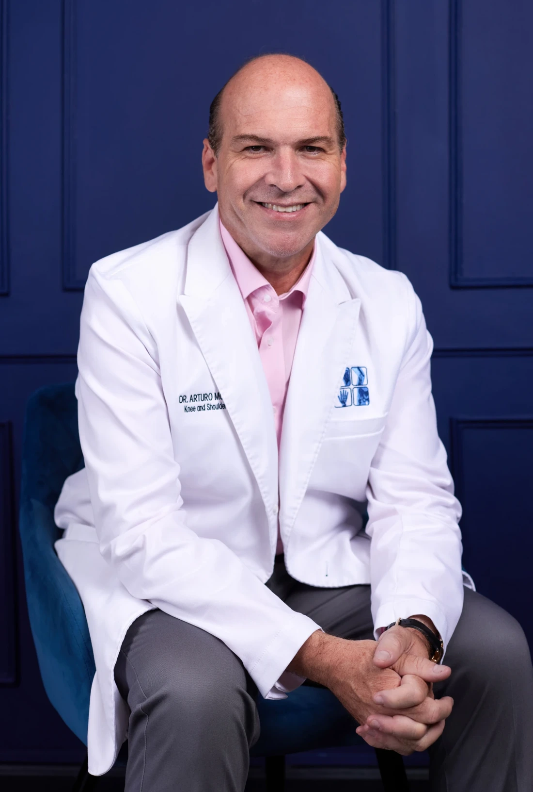
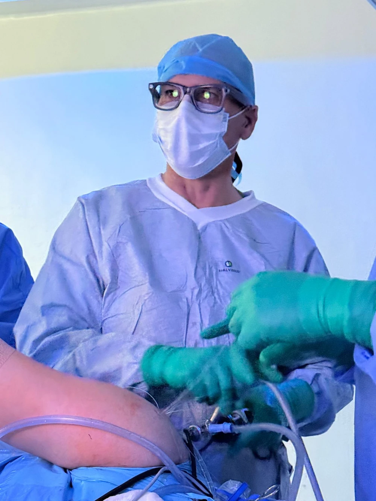

01RODILLA

DR. ARTURO MORÁN VIDAURRI
Cirugía de rodilla y hombro.
Atención de lesiones deportivas y desgaste articular, con experiencia médica y seguimiento personal.

Ortopedia y TraumatologíaExperiencia y formación especializada
Rodilla, hombro y caderaAtención de alta especialidad
OCA Medical CenterConsultorio 204 · Monterrey
LO QUE TE MUEVE, NOS IMPORTA
Rodilla, hombro y cadera.
Tres áreas de atención para acompañar tu movimiento.


CONOCE A QUIEN TE ACOMPAÑA
Traumatólogo y ortopedista
Más de 20 años dedicados a la ortopedia y traumatología, con subespecialidad en cirugía artroscópica de rodilla y hombro para la atención de lesiones deportivas.
Su formación también comprende el desgaste articular, las lesiones de cartílago y la cirugía de prótesis de rodilla y cadera.
Certificado por el Consejo de Ortopedia y Traumatología de México.
CADA PASO TIENE UN PROPÓSITO
Desde entender qué te está limitando hasta el seguimiento de tu recuperación.
Valoración de lesiones de rodilla, hombro y cadera para orientar tu atención con un diagnóstico preciso.
Diagnóstico y valoraciónAgenda una valoración
Cirugía artroscópica y prótesis de rodilla y cadera, según las necesidades de cada caso.
Artroscopia y prótesis articularesConversemos sobre tu caso
Seguimiento personalizado, enfocado en tu movilidad y calidad de vida.
Atención y seguimiento personalAgenda una consultaConoce la práctica del Dr. Morán a través de dos videos de artroscopia de rodilla.
Contienen imágenes de procedimientos quirúrgicos.
Seguros de gastos médicos mayores en convenio.
Consulta los detalles de tu aseguradora al agendar.


LO PRÁCTICO, RESUELTO
Los detalles que necesitas
para dar el siguiente paso.
En OCA Medical Center, consultorio 204. Av. Pino Suárez 640, Col. Centro, Monterrey, Nuevo León.
Ver ubicación en Google Maps ↗Escribe por WhatsApp o llama al 81 2201 0912 para consultar disponibilidad y programar tu cita.
Comunícate con el consultorio para confirmar los detalles de tu aseguradora y la documentación necesaria para tu consulta.
EMPECEMOS POR ESCUCHARTE
Cuéntanos qué te preocupa.
Agenda tu valoración con el Dr. Morán.
Consultorio 204
Av. Pino Suárez 640